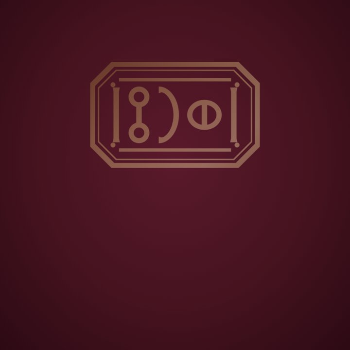
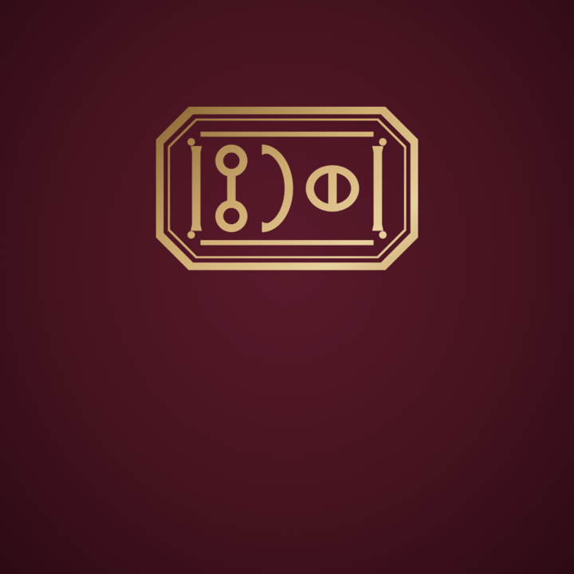
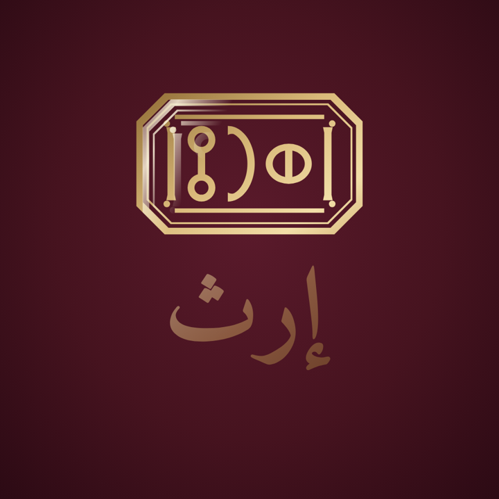
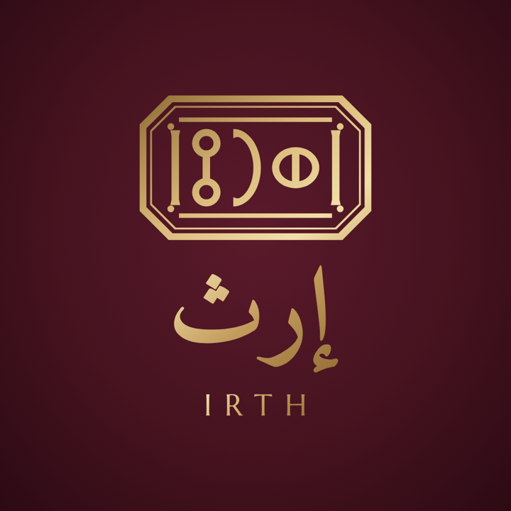

كما في مواصفة ١٠٫٨: الختم يُضغط في مكانه ثم يظهر الاسم، بلا دوران ولا ارتداد. ومن اختار في جهازه تقليل الحركة يرى اللقطة الأخيرة ثابتة.




1080 × 1080، ثلاث ثوانٍ ونصف.
540 × 540، لواتساب والبريد.
brand/motion/